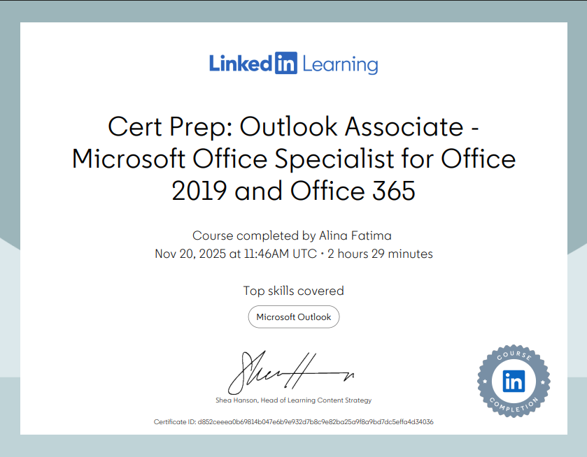
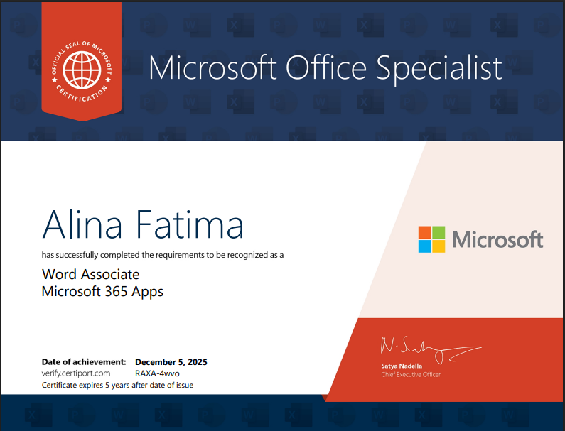

My Skills
- Web Development
- Data Analysis
- Power BI
- Bilingual
- Microsoft Office
- Communication
- Problem-Solving
- Teamwork
Qualifications and Work Experience
Certificates


Education
- 2025–Present | University of Salford: BSc Business Information Technology
- 2022–2025 | Tameside College: Health and Social Care, Grade B
- 2018–2022 | Great Academy Ashton: 10 GCSEs, Grades 9–0, including English and Maths
Work Experience
-
Sainsburys: Online Assistant | September 2025 | present
- Prepare customer grocery orders by picking the correct products which meet the customers requirements
- Customer services, answering customer questions on the floor professionally using communication skills and problem-solving skills
- Maintain a clean, safe and organised workplace
- Working together with colleagues to achieve the tasks effectively Laurel Bank Care Home: Assistant (placement) | September 2024 | April 2025
- Supported residents with their daily care and needs with full respect while protecting their privacy
- Created a supportive and secure environment for residents by actively listening to their needs and preferences, respecting their point of view and opinions
- Assisted residents with their daily activities, including personal care, meal preparation, and recreational activities
- Worked with colleagues to deliver high-quality care Future Pharmacy:Assistant (placement) | September 2023 | July 2024
- Supported with stoking medication and sorting out prescriptions on a daily basis
- Providing high-quality standards by respecting and protecting the confidentiality of clients
- Attention to detail when working with clients and their personal information following by workplace procedures